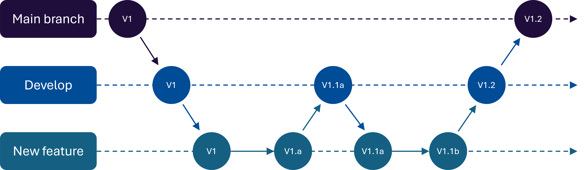
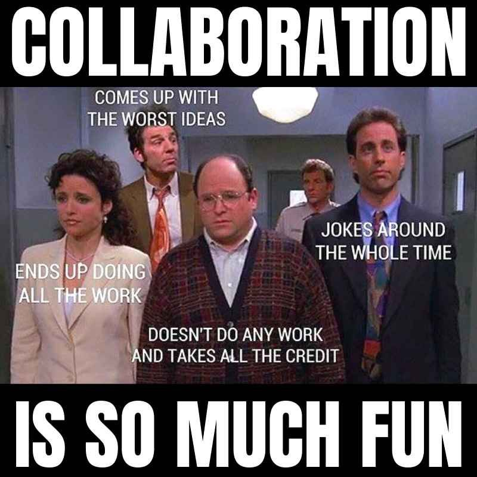

Week 4: Repositories and Version Control#
Studio Abstract#
In this studio, we will discuss repositories and why they are important; create a team repository from the course starter template; and use it for the first time. We will also discuss responsible use of AI coding agents and repository skills, and use GitHub Projects to track who does what by when.
We will address the following activities and exercises in this studio:
Overview of repositories
Creating and using a team repository from the course starter template
Using Markdown for documentation
Using AI agents and repository skills safely
Basics of managing a small-team project
Setting up GitHub Projects
Repositories in COMP1100/COMP7110#
You will use source code repositories as the main method for submitting your work in this course.
Repository history is an important source of evidence about individual contribution to the team component.
Therefore, you must make your own meaningful commits for work that belongs in the repository. Raw recordings, identifiable transcripts, credentials and other sensitive material do not belong in GitHub.
Repositories in software projects#
⏱️ 15 minutes - Class discussion
Devices closed for this discussion
Source code repositories (which can be used for much more than source code!) using tools such as Git and Mercurial are commonplace in software projects. They allow teams to create, store, manage and share their code and other documentation, but they are much more than tools like Google Drive, OneDrive, or DropBox – they help to resolve conflicts in editing, and to create sub-projects so that you can work on part of a product without affecting the rest.
Git, originally created by Linus Torvalds, creator of Linux, is the most commonly-used repository tool. It is a distributed version control system to track versions of files.
GitHub is a company that provides a browser or desktop based user interface for Git. There are many ways to use Git, and there are other companies that provide Git services, but GitHub is one of the more popular services. In this course, we will use GitHub for our projects, because it is a well-known tool, and because the course staff can set up a shared space for all projects in the course.
Why use repositories?#
Surely, we can just share source code via email or a messaging app by zipping it up, or just share it on Google Docs, OneDrive, DropBox, etc!
Well… we can do that, but it is a Very Bad Idea (VBI)!
First, in this course, it means that the staff won’t be able to tell that you have been achieving the learning outcomes, because we won’t know who did what.
But even in real-world projects, it’s a VBI.
Consider Imogen and Zac working collaboratively on a software project using a shared drive, such as Google Drive. One day, Imogen downloads a file to work on. A bit later, Zac does too. Imogen makes some changes and then copies the file back to the server. Her changes are all there! A bit later, Zac uploads his copy of the file. His changes are all there! After lunch, Imogen needs to make some further changes, so she gets the file again, knowing that Zac had worked on it. What would she find??
After Imogen recovers from her extreme disappointment, she will have to work with Zac despite the fact she will resent him! They will have to merge the changes and update them.
How can we solve this? One option is to only allow one person to work on one file at a time. This is okay, but it can cause blocks; sometimes people want to make minor changes to the same files. What if Zac is working on something for a week and Imogen just needs to correct a small bug?
Source code repositories help us with all this with several pieces of functionality:
Pulls: Multiple people can work on the same file at the same time. They first pull any other changes made from the repository since they last used it.
Pushes: When Imogen pushes her changes to the shared repository, three things can happen:
Nobody else has made changes since Imogen downloaded the latest version, so everything is good.
If Zac or someone else has made changes to the same file but at different lines, a repository tool like Git will simply merge the two files automatically.
If Zac or someone else has made changes to the same file and some are on the same lines, a repository tool like Git will prevent Imogen copying the file back, will merge any lines that do not conflict, and will show her lines that do conflict. She then needs to resolve those conflicts. As a quick note, Git has both commits and pushes. Each user maintains a local copy of a repository on their machine. They commit code to the local repository, and then when they are happy, they push it to the server.
Branches and merges: If Imogen wants to make some changes to the source code that will take a few weeks, she may want to keep pushing her changes to the repository to avoid losing her work. However, she may not want everyone else to use those changes yet; for example, they aren’t complete or she hasn’t tested them, this would interfere with others’ code. In this case, she can create a branch of the repository, where she can continue to push changes just to that branch, which doesn’t affect everyone else. Once she is happy, she can merge her branch into the main branch of the repository. If there are conflicts, she will not be able to merge until she resolves them.
Branches#
As an example of using branches, consider Imogen working for an organisation that has a successful web application. They want to add new features, fix bugs, etc., regularly. They release new versions every few days on average to fix bugs. Imagine, they want to go from version V1 to version V1.1 by adding two features, which we’ll call features A and B. Imogen estimates it will take about 4 weeks to implement these.
They may have (at least) three branches:
Main branch: This is the primary branch where the stable, production-ready code resides. Changes here are thoroughly tested and reviewed. It would be a VBI (very bad idea) for Imogen to start coding those new features directly on the main branch; customers would see partially implemented features, probably with bugs.
Development branch: Used for integrating new features and bug fixes before they are merged into the main branch. This branch is less stable than the main branch but more stable than feature branches. However, it would be a bad idea (BI) for Imogen to start adding features directly to this, as other developers in the organisation are also making changes, and it will be difficult for her to test her features while other source code is changing as well.
Feature branches: These are created from the development branch for specific features or fixes. Developers work on these branches independently, allowing them to make changes without affecting the main or development branches. Imogen can create a feature branch from the development branch, that is implementing just her features.

Once Imogen has implemented and tested feature A, she merges this. There are three steps to a merge:
Merging feature branches: Once a feature is complete and tested, it is merged into the development branch. So, Imogen would integrate the changes from her feature branch into the development branch.
Conflict resolution: During merging, conflicts may arise if changes overlap. A tool like Git will highlight these conflicts, and developers must resolve them before completing the merge.
Final merge to main branch: After thorough testing and review, changes from the development branch are merged into the main branch. This ensures that only stable and tested code is deployed to production.
Each time these merges happen, conflicts will be detected, and non-conflicting code will be merged. Brilliant! This means that Imogen will actually want to continue working with Zac, rather than resenting him forever and leaving the organisation after six months because she needs a break.
Commit messages#
When someone commits changes to a local repository, they are asked to (and should!) use a commit message. A commit message is a brief description that explains what changes were made and why. This provides context and clarity for other developers to help team members understand why changes are made, who made them, to track progress, and to help rollback when changes introduce new problems.
A good commit message should:
Clearly describe what changes have been made. Messages like “Fixed a bug” or “Updated the code” are not good enough.
Start with a verb; e.g. “Added password encryption”
Be concise. Keep it to a few words per small change.
Reference any issues / tickets that it fixes.
Focus on a single thing; that is, avoid committing changes across many features of the software at once – just make one change or group of changes in each commit.
An example of a nice commit message:
Add user authentication feature
- Implemented login and registration forms
- Added password encryption
- Updated user model to include authentication fields
- Fixed related bugs in user session management
Summary#
Repositories have several important features:
Sharing of code
Pull
Commit
Push
Branches
Branch
Merge
Conflict detection and resolution
Commit messages
Your team repository#
Devices required for all exercises in this section
In this part of the studio, you will open and start using the private team repository already prepared for you by the teaching team from the course starter.
We are not going to explicitly tell you all of the commands that you need. Instead, we want you to read the Git documentation to get a more complete understanding of how to use a Git repository.
Overview#
Here are the steps that you need to know how to do:
Open the assigned private repository prepared from the course starter and confirm that every team member can access it.
Clone a repository. Each member will need to do this only once for each machine they use.
Pull items from a repository. Do this each time you go to work on the code.
Commit to a local repository. Do this when you have made changes and you are happy with them. Your team will NOT be able to see your changes.
Push to a central repository. Do this when you want to sync your changes with your central repository and share with your team.
Create a branch, and pull, commit, and push from/to a branch.
Merge branches.
Set up account and accept course invite#
⏱️ 10 minutes - Individual
You will have received an invite to the COMP1100 and COMP7110 GitHub organisation.
Accept this invite, creating an account on GitHub if you do not have one already.
Installing a Git client#
⏱️ 10 minutes - Individual
The first thing each team member needs to do is install the software for Git.
There are three main options for you to use, and the staff have no particular recommendation: the decision is up to your preference. However, if you are new to coding and have minimal experience using command-line tools, we recommend option 3 below. The three general options are:
If you use an existing integrated development environment (IDE), such as VSCode, you will be able to install a Git client within that (if you haven’t already). This means you can use Git from within your IDE. Find the documentation for how to install it within your IDE. If you don’t use an IDE, go to 2 or 3.
Use a Git command-line tool. This is for those who like to use Linux (either natively or via Windows SL) or the MacOS underlying Unix command line. If you want to do this, you can install it locally. One way to do this is to install the Github desktop client (see option 3), which will also install the command-line tool for you.
Use the GitHub Desktop Client. This is installed as a standard desktop client on your PC, and it allows you to interact with a Git server, including GitHub, which is what we will use. If you opt for this, download from here. There are other desktop clients available, and you are also free to use those.
Open your assigned team repository#
⏱️ 10 minutes - Group
The teaching team has prepared one private repository per project team from the innovation-project-starter template. Do not create another course repository or use the template yourself.
One team member should share their screen and open the COMP1100 and COMP7110 GitHub organisation. Locate the repository assigned to your team and confirm that:
the repository is private and owned by the course organisation;
the starter
README.md, guides and supplied project structure are present; andevery team member can open the repository using their own GitHub account.
If the assigned repository is missing or a team member cannot access it, post in your Microsoft Teams channel and tag your legend. Include the team name and affected GitHub username, but do not post passwords, authentication codes or recovery details.
Clone your repository#
⏱️ 10 minutes - Group
Each member of the group should clone their repository, which means to take an existing repository and create a copy on your local machine.
Use the following documentation to help you with this task:
Adding, committing, and pushing files and folders#
⏱️ 20 minutes - Group
Git repositories are known as distributed repositories. This means that each person has a copy of the repository (including its entire history, etc.) on their local computer, which they need to sync with a remote repository so others can see their changes.
The following tasks require you to understand how to add and commit files to your local repository and how to sync those with a remote repository; in our case, the remote repository on Github.
Use the following documentation to help you with this:
GitHub repositories, like any file storage, require a logical file structure. Complete the following tasks:
Find the team values that you agreed to when your team formed and type them up into a text file (NOT a Word document or similar; just a plain text file edited in something like Notepad or VSCode). Have you lost your team values? If yes, this is precisely why repositories are a great idea! Write up what you remember. You will convert this file to markup by renaming it to
team_values.md.One team member (who has a copy of the file) should copy this file into the folder where their repository is cloned to.
Next, as a group, work together to figure out how this team member should
addandcommitthis change to their local repository, and thenpushit to the Github remote repository. Don’t forget to add a good commit message!Now, each team member should pull from the remote Github repository.
In the project overview indicated by the starter repository, list team members by name and GitHub username. Do not publish student numbers or email addresses in the repository.
Commit and push this file to the repository.
Goal: The end result should be that each team member should be able to see the file team_values.md and open/edit it on their local computer.
If each member cannot see this, trace back to see what you have missed.
Deliverable: Show your legend that you have successfully completed this task before moving on to the next task.
Common mistakes:
You need to explicitly tell git when you want to add a file to your local repository. This allows us to have files in the folder where your repository is on your local computer without putting them in the repository itself.
Remember that when you make a change, you need to first commit it to your local repository and then push it to the remote repository on Github.
Understanding branch and merge#
⏱️ 20 minutes - Group
In this exercise, we will learn how to branch and merge. Use the following documentation to help you with this:
You will use real, deidentified interview evidence records from interviews conducted by your team—not raw or identifiable transcripts. If you do not yet have a usable deidentified record, do not invent one. Ask your legend for help deidentifying your notes and make a plan to complete the required interviews.
Complete the following task, which gets each member to create a branch, make changes, and merge it back into the main branch:
Locate the interview-record folder supplied by the starter repository. Read its README and the provided template.
Next, each team member must now sync their local repository using
pullto pull down the new change.Each member should create a new branch. On that branch, add or improve one deidentified interview evidence record using the supplied template.
Check that the record contains no names, contact details, exact locations, raw recordings or identifiable transcript text.
Commit the record locally with a meaningful message, push the branch, and open a pull request.
A teammate should review the privacy boundary and the distinction between evidence and interpretation before the pull request is merged.
Now, each team member should switch to the main branch and pull all of the changes from the other team members.
Finally, each team member should delete the branch they have created as the changes are in the main branch, so the development branches are no longer required. HINT: you need to use the
branchcommand to delete a branch.
Goal: The end result should be that all team members can see the reviewed, deidentified evidence records while raw source material remains in approved UQ storage.
If each team member cannot see all of the reviewed evidence records, trace back to see what you have missed.
Deliverable: Show your legend a merged pull request and explain where raw source material is stored and why it is not in GitHub.
Common mistakes:
Make sure to pull the repository after your team member has pushed the change with the
Interviewsfolder.Make sure that you are not pushing to the main branch after you add your files.
AI coding agents and repository skills#
⏱️ 20 minutes - Group
AI coding agents can inspect and change files in a repository. A repository skill gives an agent a reusable workflow and local rules for a particular task. The starter repository contains a create-interview-record skill for turning already-deidentified notes into a consistent evidence record.
The skill is a guardrail, not a guarantee. You remain responsible for the inputs, the review and the final commit.
Using AI is optional. Choose one of these pathways:
Hosted AI: use a supported hosted agent with the repository skill.
Local AI: use a compatible agent with a model running on your device and check its tool, network and privacy settings.
No AI: read
SKILL.mdas a documented procedure and complete the workflow manually.
Every pathway uses your team’s real, already-deidentified interview notes and produces the same evidence record for the same review.
Safety boundary#
Never provide an agent with participant names, contact details, exact addresses, raw recordings or identifiable transcripts.
Never ask an agent to invent a participant, quotation, consent statement or finding.
Keep direct evidence, observations and interpretation distinct.
Check every generated statement against your source notes before committing it.
Disclose material AI assistance in the evidence record or pull request.
Follow the workflow#
Use your team’s real, already-deidentified interview notes. Do not generate or invent interview data.
Read
SKILL.mdbefore beginning, regardless of which pathway you choose.Apply the documented
create-interview-recordworkflow to one set of deidentified notes using hosted AI, local AI or the manual procedure.Inspect the proposed record and check that evidence, observation and interpretation remain distinct.
Check every statement against the securely stored source notes and correct anything unsupported.
If you used AI, disclose material assistance in the evidence record or pull request.
Commit the reviewed evidence record on a branch, then open a pull request for a teammate to review.
Deliverable: Show your legend the reviewed pull request, identify the pathway you chose, and explain one thing the workflow can help with and one thing it cannot guarantee.
Take a break#
⏱️ 10 minutes
Managing merge conflicts#
⏱️ 20 minutes - Group
The challenge for this task is to create an artificial merge conflict. You can do these in a variety of ways.
Use the following documentation to help with this task:
Using the team_values.md file, use your own creativity to come up with a merge conflict between two team members by changing: (a) the same line of the file; and (b) each a different line of the file. This can be just a spelling correction or a small change in wording – or add a whole new team value!
Goal: The end result should be an updated repository with the conflicting changes resolved.
Deliverable: Show your legend that you have successfully completed this task before moving on to the next task.
One quick point on terminology#
Git is a tool that allows us to create and use Git source code repositories.
Github is a web platform for hosting the repository database.
Git repositories can be hosted on other web platforms, such as a private platform in an organisation, or other public platforms, such as BitBucket.
More than source code: using Markdown#
We can use source code repository for more than source code – we can use it to document our project too!
However, so that we get the benefit of merging etc., we need to document stuff in plain text files. This could be .txt, HTML files, etc.,
In this course, we will use Markdown.
Markdown is an easy-to-use markup language that can be used to format plain text. It can be stored in repositories using tools like Github. It is readable in its raw format, but can be converted to better-looking formats such as PDF and HTML (these notes are written in Markdown!).
To write documents in markdown, you can just use any plain text editor, such as Notepad, VSCode, vi (if you are awesome), or even word processors – but make sure you save as plain text!
And best yet, Github and other repository hosting platforms format Markdown files for you when you read them online.
Use the following tutorials for this task:
In this task, you will format your team values using Markdown. Together, go back to your team_values.md on one team member’s machine and do the following:
Create a Markdown header called “Team values”
Put your list of values into an ordered list.
Format your values so that each value has a name, such as “Praise our legend” in bold, followed by a description of the value that is not in italics.
Commit, and push these changes to the remote repository on Github.
Go to the URL for your Github repository, which should be at [http://
], where you should be able to click on team_values.mdand see your values nicely formatted!
Goal: The end result should be your team values, formatted properly and looking professional.
Deliverable: Show your legend your beautifully-formatted team values.
Take a break#
⏱️ 10 minutes
Using team planning tools in COMP1100/COMP7110#
We expect teams to use the Github Project tool to track the team progress in this course.
Adding and closing tasks is straightforward and easy. The difficult part is deciding what tasks need to be completed, and who will do what by when.
The small overhead of using the Github Project tool is paid back to the team by them being able to see who is assigned to what, when they have agreed to deliver it, and whether it has been delivered.
Effective Small-Team Planning#
⏱️ 15 minutes - Group
Devices closed for this exercise
Managing yourself is challenging enough, but imagine if each limb was its own person and the only way to control them is through an itemised daily schedule. Welcome to team planning.
In this studio, we’ll look at a simple but effective model of project planning for small teams, such as yours, and a tool, called Github projects for managing your team.
{kind=link}

Fig. 1 Teamwork!#
In this course we recommend the use of Github projects, a team scheduling and planning application, but there are many other suitable tools.
Managing a small team: Who Does What By When#
The model of who does what by when is a simplified project management model, proposed by Manager Tools owner Mark Horstman. He agrees it is over-simplified, but the who, what, when trilogy is the most important three parts of project management.
All projects are completed by completing a series of tasks. It is difficult to know up front what all of those tasks will be. As a result, project management is a discipline in itself. For large-scale projects, even in the software industry, we may need multiple people to manage different parts of a project, and that could require using sophisticated project management tools, overview charts, etc.
But for projects with small teams of about 5 or less people, such sophistication is usually not necessary.
Further, all tasks are completed by people who are on the project. And people’s behaviour is often driven by deadlines.
So, during a small-team project, we just need to know three things: who does what by when.
No budget, no critical path, and no lengthy reporting. Note that budget IS important, but in small-team projects, especially start-ups, we see that: (a) budget is almost entirely taken up by the cost of people, so focus on people and the budget takes care of itself; and (b) budget is typically so front of mind that it does not need managing like our time.
Who#
People do tasks on projects. Tasks don’t get done without people. Great project managers know who is in the project and what they are doing.
As a team, we need to know who is completing each task so we can discuss with them, ask questions, follow up, and, ultimately, hold them accountable.
For each task on a project, ONE person should be assigned to do that, and that person is accountable for ensuring it is completed on time. If you see a task that requires more than one person, break it into smaller tasks (see more in the next step below).
Tips on defining who:
Each task should have one person responsible. If we have more than one, break it into smaller tasks.
Hold people accountable for completing tasks.
Does what#
Tasks are what make up a project. No project gets done if its constituent tasks are not done.
It is important to identify the tasks that need to be done in a project. We shouldn’t identify every task at the start of the project. This is a waste of time, especially in software projects, and doubly for innovation projects. Things change! Instead, we should have a high-level idea of where the project is going, and have clear tasks identified for the next 1-2 weeks.
Some tips on defining tasks:
Each task should be measurable. That is, it should be easy to tell whether it is done or not. For example, “Think about customer interview format” is not measurable because you can’t see my thinking. “Send draft interview questions to person X” is measurable, because it is clear whether I have sent it to X or not.
Make reporting part of the task. It is great when tasks are finished. It is much better when others in the team know that tasks are finished, especially if they are waiting on them. As part of a task, make reporting part of the task; e.g. “Check user story 7 into the repository and report this to person X”.
By when#
People hate deadlines. Actually, people hate having deadlines, but like other people sticking to their own deadlines. The fact is, deadlines drive behaviour. If university courses didn’t have deadlines, would you still submit all your work by the end of the semester?
Some tips on deadlines:
Make tasks that require no more than 5 working days; even less for most tasks. A week is about as far ahead as we tend to think. For example, if a task will take about 6 weeks, it is certain that there are smaller sub-tasks that can be done. “Conduct 70 customer interviews” could start with “Define customer interview questions”, then “Ask person X to check questions”, then “Interview first 5 customers to validate questions”, etc.
Make deadlines specific. For example, not “Next week” or even “Thursday 27th”, but “1pm on Thursday 27th”.
Shorter deadlines are often more effective. The famous Parkinson’s law is “work expands as to fill the time available for its completion”, which means: the more time we give people/ourselves, the longer we take. People will resist shorter deadlines, but seem to respond well to them. Longer deadlines do not drive behaviour. So keep deadlines short, but not so short that quality is affected.
Update the deadline if it is missed. We all miss deadlines sometimes. In such a case, don’t just say “OK, please submit it soon” – assign a new deadline immediately: “OK, thanks for letting us know. Can you please get it to us by 1pm on Thursday?”
Summary#
Basic team management planning means knowing:
Who is doing each task.
One person per task.
Hold people to account.
What each task is.
Make tasks measurable.
Make reporting part of the tasks.
When each task is due.
Five working days maximum.
Make deadlines specific.
Shorter deadlines drive behaviour.
Update deadline if missed.
Task planning exercises#
⏱️ 15 minutes - Group
Devices closed for this exercise
As a team, get together, brainstorm, and write down ALL of the tasks that you can think of for your team for the coming two weeks. (Hint: look at the course schedule).
Think about things to do with setup, project work, even scheduling meetings.
For each one, write down: who does what by when.
Your legends will be working with you to give feedback on your task breakdown.
Github Project setup#
⏱️ 30 minutes - Group
Devices open for this exercise
In this project, you will use Github projects. It allows us to define tasks, assign them to people, and give them due dates: who does what by when!. It also supports a whole other range of nice features that you may wish to explore independently.
You already have a Github account from an earlier studio. Once you log in, use the following tutorials to learn how to use Github.
Create a project#
One team member should create a repository project. To do this, navigate to your team repository, then select ‘Projects’ from the top menu, and then select ‘New Project’.
Note: You need to create this from your repository, otherwise it will be public to anyone in the organisation, who will be able to change tasks.
We suggest using the template called ‘Team planning’, but you are free to try others if you want.
You MUST name your project using the following format (same as your MS Teams channel):
[XY]_[Legend]
where XY is your team number using two digits and Legend is your legend name.
For further details, read:
Understanding project boards#
You should now see a project board. If you have selected the ‘Team Planning’ template, along the ‘Backlog’ tag, you will see three columns: Todo, In Progress, and Done.
These three labels are a simplified Kanban board, which track:
Todo: the backlog of tasks that a team needs to complete.
In Progress: the tasks that the team is currently working on.
Done: the tasks that the team has completed.
The idea is that, when teams/individuals decide that tasks need to be done, they add the task to Todo.
When an individual starts on a task that is in the Todo backlog, they move it to In Progress, so their team members know what they are working on.
Finally, when it is done, tasks are moved to Done.
Feel free to add more lists if your team wants. For example, Kanban boards often have ‘Planning’ in between Todo and In Progress; and ‘Review’ between In Progress and Done.
Iterations#
Many projects (including the project in this course) are done in iterations. It is useful for Github projects to know the iteration dates, so you can ‘tag’ tasks, etc., with the iteration, making it easy to navigate by filtering things only from the current iteration, for example.
One team member should:
Go to the main page of your Github project.
Select the three dots ‘…’ from the top right of the page.
Click ‘Settings’ and then ‘Iteration’.
Create Iteration 1, Iteration 2, and Iteration 3 using the dates from the course profile.
Creating tasks#
Next, we will start adding tasks from the earlier exercise. If you run into trouble, consult the documentation:
Create tasks: Create new tasks (items) for the tasks that you are responsible for. Give the task a short, meaningful title, and add a description in the ‘Description’ field if more information is required; e.g. requirements, links to data source, etc.
This is the What in Who does what by when.
Click on the task name, and another window will appear, with a heap of information. Do the following:
Tag people: At the top as ‘Assignees’, which are the people responsible for completing the tasks. A task can belong to more than one person. Select who is responsible for the task you are adding if you are not the only one responsible.
This is the Who in Who does what by when.
Add due dates: Find the ‘End Date’ and assign a due date for the task.
This is the By when in Who does what by when.
Add iteration: Find ‘Iteration’, click on this, and assign the right iteration (Iteration 1, 2, or 3).
Tip: For any task, the due date should be before the end date of the iteration, but Github does not warn if it is not.
Seeing the due date#
Close the task so you can see the project board again. You will note that the due date does not appear in this view.
To make it show, select ‘Backlog’ (or the name of the view that you are using if you didn’t select the ‘Team Planning’ template), then ‘Fields’, and then ‘End Date’.
Filtering#
From the main project board, you should see a search bar with ‘Filter by keyword or by field’. Here, you can filter to see you own tasks only, by name, etc.
One ‘hidden’ option is to filter by iteration. Type “iteration: “ and then scroll down to see Iteration 1, Iteration 2, and Iteration 3. This is useful to focus only on tasks that are relevant in the current iteration. You can search “iteration:@current” for this too.
And you’re done!#
You now have a project management system that is suitable for small teams!
Your responsibility is to now use this task tracker and look at it when you want to know what others are working on.
Initial hypotheses and interview questions#
⏱️ 45 minutes - Team
By now, you should have decided on 1-3 challenges that you want to explore.
In this part of the studio, as a team:
List out the hypotheses for your project. Remember to use the structure in the chapter on experimentation.
Derive a list of interview questions that test these hypothesis. Remember to use the tips in the chapter on interviews.
After the studio, create test cards for your hypothesis and start interviewing, as outlined in this week’s homework.
Exit Ticket#
Your exit ticket for this week’s studio is to:
Show your legend that every team member can access the assigned private repository prepared from the course starter.
Show your legend where the repository records team membership and confirm that student numbers and email addresses have not been published.
Each team member shows their cloned copy of the current repository and a meaningful commit or reviewed pull request.
Explain the interview-data boundary and demonstrate the
create-interview-recordworkflow using your team’s real, already-deidentified interview notes through the hosted, local or manual pathway.Get feedback from your legend on your hypotheses and questions, and act on it.
Bonus: It’s dangerous to go alone! Take this.#
⏱️ ∞
Here is a collection of valuable knowledge and insight that may help you along in this course. Feel free to review this content in your own time.